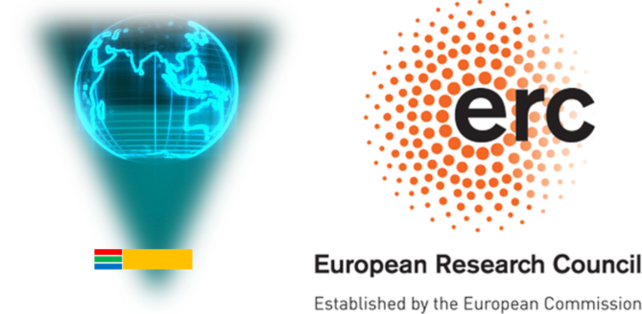
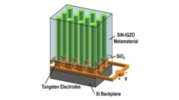

Publications#
Journal papers#
 |
Tsang-Hsuan Wang, Po-Chun Hsu, Maxim Korytov, Jan Genoe, Clement Merckling, Polarization control of epitaxial barium titanate (BaTiO3) grown by pulsed-laser deposition on a MBE-SrTiO3/Si(001) pseudo-substrate, Journal of Applied Physics 128, 104104 (September 2020), DOI: 10.1063/5.0019980 |
Tsang-Hsuan Wang,
Robert Gehlhaar,
Thierry Conard,
Paola Favia,
Jan Genoe,
Clement Merckling, |
|
 |
Guillaume Croes,
Renaud Puybaret,
Janusz Bogdanowicz,
Umberto Celano,
Robert Gehlhaar,
Jan Genoe, |
Conferences#
Artur Hermans, Robby Janneck, Cedric Rolin, S. Clemmen, Paul Heremans, Jan Genoe, Roel Baets, Growth of Thin Film Organic Crystals with Strong Nonlinearity for On-Chip Second-Order Nonlinear Optics, Proc. IEEE Photonics Benelux Symposium, Brussels, Belgium, November 15-16, 2018.
Guillaume Croes, Nikolay Smolentsev, Tsang-Hsuan Wang, Robert Gehlhaar, Jan Genoe, Non-linear electro-optic modelling of a Barium Titanate grating coupler, Proc. SPIE 11484, 114840D: Optical Modeling and Performance Predictions XI (August 2020), DOI: 10.1117/12.2568032
Guillaume Croes, Robert Gehlhaar, Jan Genoe, Hologram Wavefront Shaping by a Non-Linear Electro-Optic Spatial Light Modulator, Holography: Advances and Modern Trends VIII, April 2023, Prague, Czech Republic
Guillaume Croes, Robert Gehlhaar, Jan Genoe, Sub-Wavelength Custom Reprogrammable Active Photonic Platform for High-Resolution Beam Shaping and Holography, Proc. SPIE PC12196, PC1219619: Active Photonic Platforms, San Diego, California, United States (October 2022)
Clement Merckling,
Islam Ahmed,
Tsang-Hsuan Wang,
Moloud Kaviani,
Jan Genoe,
Stefan De Gendt,
Integrated Perovskites Oxides on Silicon: From Optical to Quantum Applications,
ECS Meeting Abstracts MA2022-01, 1060 , July 2022,
DOI: 10.1149/MA2022-01191060mtgabs
Tsang-Hsuan Wang, Robert Gehlhaar, Thierry Conard, Jan Genoe, Clement Merckling, Interface Control and Characterization of SrTiO3/Si(001), Proc. E-MRS-fall, 20th to 23rd September 2021
PhD thesis#
Tsang-Hsuan Wang, Study of Barium Titanate Epitaxy on Silicon toward Its Application in Video Holography, PhD Thesis, KULeuven, Leuven, Belgium, Monday, February 13, 2023. |
|
Guillaume Croes, (PhD Thesis in preparation), KULeuven, Leuven, Belgium |